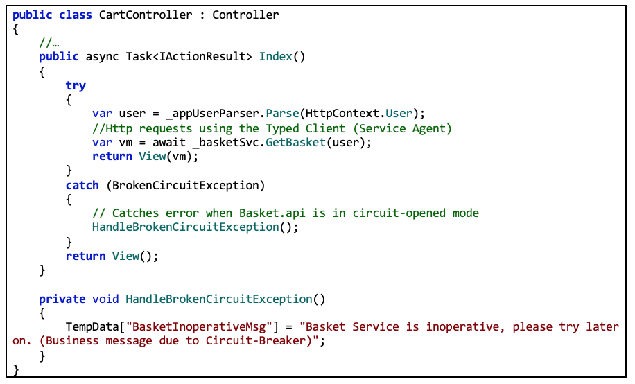
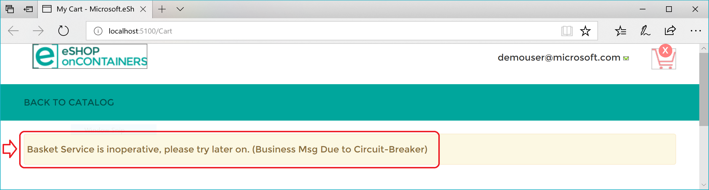
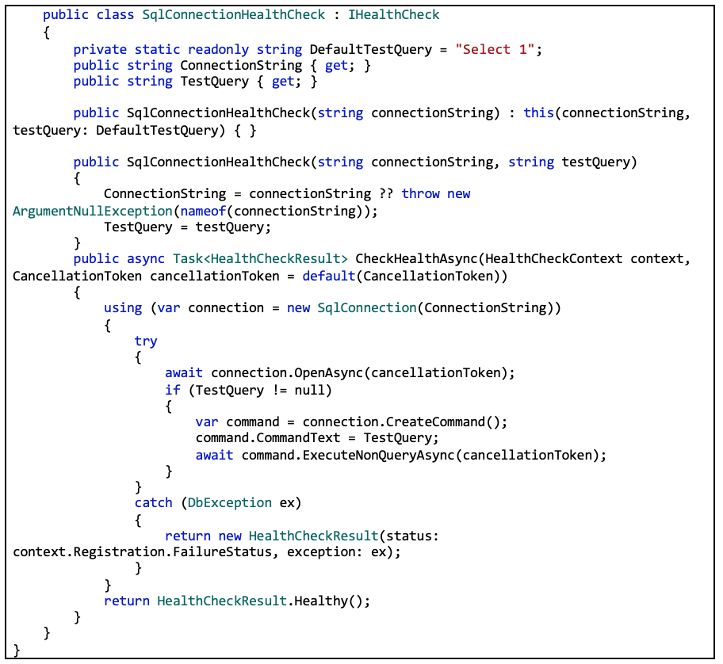
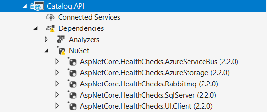
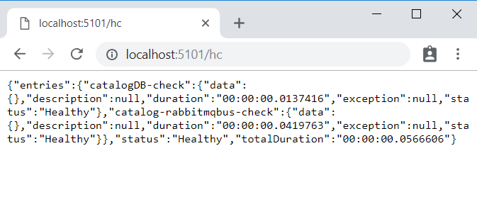
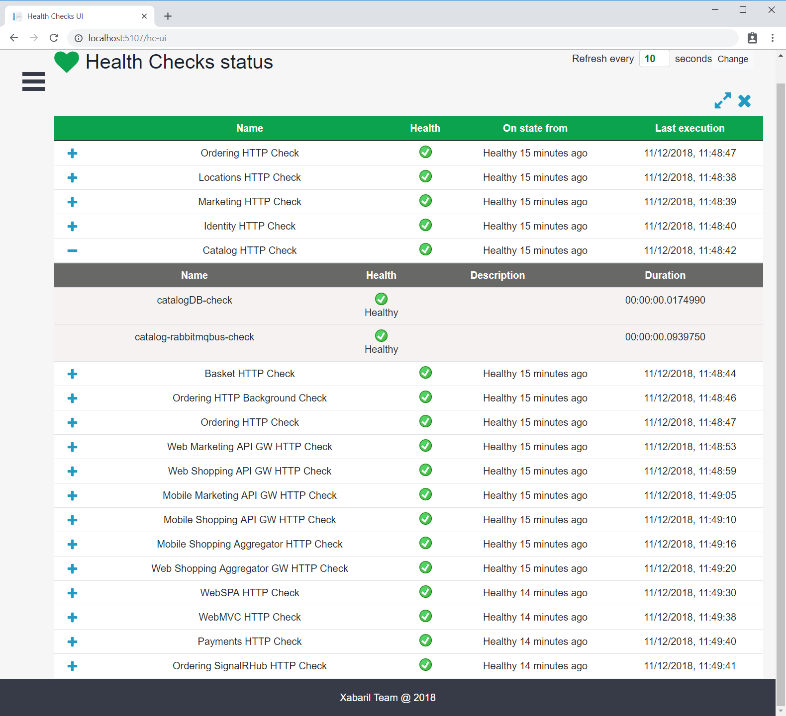

Here’s a summary. The Retry policy tries several times to make the HTTP request and gets HTTP errors. When the number of retries reaches the maximum number set for the Circuit Breaker policy (in this case, 5), the application throws a BrokenCircuitException. The result is a friendly message, as shown in Figure 8-6.

Figure 8-6. Circuit breaker returning an error to the UI
You can implement different logic for when to open/break the circuit. Or you can try an HTTP request against a different back-end microservice if there’s a fallback datacenter or redundant back-end system.
Finally, another possibility for the CircuitBreakerPolicy is to use Isolate (which forces open and holds open the circuit) and Reset (which closes it again). These could be used to build a utility HTTP endpoint that invokes Isolate and Reset directly on the policy. Such an HTTP endpoint could also be used, suitably secured, in production for temporarily isolating a downstream system, such as when you want to upgrade it. Or it could trip the circuit manually to protect a downstream system you suspect to be faulting.
Health monitoring can allow near-real-time information about the state of your containers and microservices. Health monitoring is critical to multiple aspects of operating microservices and is especially important when orchestrators perform partial application upgrades in phases, as explained later.
Microservices-based applications often use heartbeats or health checks to enable their performance monitors, schedulers, and orchestrators to keep track of the multitude of services. If services cannot send some sort of “I’m alive” signal, either on demand or on a schedule, your application might face risks when you deploy updates, or it might just detect failures too late and not be able to stop cascading failures that can end up in major outages.
In the typical model, services send reports about their status, and that information is aggregated to provide an overall view of the state of health of your application. If you’re using an orchestrator, you can provide health information to your orchestrator’s cluster, so that the cluster can act accordingly. If you invest in high-quality health reporting that’s customized for your application, you can detect and fix issues for your running application much more easily.
When developing an ASP.NET Core microservice or web application, you can use the built-in health checks feature that was released in ASP .NET Core 2.2. Like many ASP.NET Core features, health checks come with a set of services and a middleware.
Health check services and middleware are easy to use and provide capabilities that let you validate if any external resource needed for your application (like a SQL Server database or a remote API) is working properly. When you use this feature, you can also decide what it means that the resource is healthy, as we explain later.
To use this feature effectively, you need to first configure services in your microservices. Second, you need a front-end application that queries for the health reports. That front-end application could be a custom reporting application, or it could be an orchestrator itself that can react accordingly to the health states.
In this section, you will learn how the HealthChecks feature is used in a sample ASP.NET Core 2.2 Web API application. Implementation of this feature in a large scale microservices like the eShopOnContainers is explained in the later section. To begin, you need to define what constitutes a healthy status for each microservice. In the sample application, the microservices are healthy if the microservice API is accessible via HTTP and its related SQL Server database is also available.
In .NET Core 2.2, with the built-in APIs, you can configure the services, add a Health Check for the microservice and its dependent SQL Server database in this way:
In the previous code, services.AddHealthChecks() method configures a basic HTTP check that returns a Status code 200 with “Healthy”. Further, AddCheck() extension method configures a custom SqlConnectionHealthCheck that checks the related SQL Database’s health. The AddCheck() method adds a new health check with a specified name and the implementation of type IHealthCheck. You can add multiple Health Checks using AddCheck method, so a microservice will not provide a “healthy” status until all its checks are healthy.
SqlConnectionHealthCheck is a custom class that implements IHealthCheck, which takes a connection string as a constructor parameter and executes a simple query to check if the connection to the SQL database is successful. It returns HealthCheckResult.Healthy() if the query was executed successfully and a FailureStatus with the actual exception when it fails.
Note that in the previous code, “Select 1” is the query used to check the Health of the database. To monitor the availability of your microservices, orchestrators like Kubernetes and Service Fabric periodically perform health checks by sending requests to test the microservices. It is important to keep your database queries efficient so that these operations are quick and don’t result in a higher utilization of resources.
Finally, we create a middleware that responds to the url path “/hc”:
When the endpoint <yourmicroservice>/hc is invoked, it runs all the health checks that are configured in the AddHealthChecks() method in the Startup class and shows the result.
Microservices in eShopOnContainers rely on multiple services to perform its task. For example, the Catalog.API microservice from eShopOnContainers depends on many services, such as Azure Blob Storage, SQL Server, RabbitMQ. Therefore, it has several health checks added using the AddCheck() method. For every depending service, a custom IHealthCheck implementation that defines its respective health status needs to be added.
The open-source project AspNetCore.Diagnostics.HealthChecks solves this problem by providing custom health check implementations for each of these enterprise services that are built on top of .NET Core 2.2. Each health check is available as an individual NuGet package that can be easily added to the project. eShopOnContainers use them extensively in all its microservices.
For instance, in the Catalog.API microservice, we added the following NuGet Packages:

Figure 8-7. Custom Health Checks implemented in Catalog.API using AspNetCore.Diagnostics.HealthChecks
In the following code, the health check implementations are added for each of the dependent service and then the middleware is configured.
Finally, we add the HealthCheck middleware to listen to “/hc” endpoint:
When you’ve configured health checks as described in this article and you have the microservice running in Docker, you can directly check from a browser if it’s healthy.
You have to publish the container port in the Docker host, so you can access the container through the external Docker host IP or through localhost, as shown in figure 8-8.

Figure 8-8. Checking health status of a single service from a browser
In that test, you can see that the Catalog.API microservice (running on port 5101) is healthy, returning HTTP status 200 and status information in JSON The service also checked the health of its SQL Server database dependency and RabbitMQ and hence the health check was reported itself as healthy.
A watchdog is a separate service that can watch health and load across services, and report health about the microservices by querying with the HealthChecks library introduced earlier. This can help prevent errors that would not be detected based on the view of a single service. Watchdogs also are a good place to host code that can perform remediation actions for known conditions without user interaction.
The eShopOnContainers sample contains a web page that displays sample health check reports, as shown in Figure 8-9. This is the simplest watchdog you could have since all it does is show the state of the microservices and web applications in eShopOnContainers. Usually, a watchdog also takes actions when it detects unhealthy states.
Fortunately, AspNetCore.Diagnostics.HealthChecks also provides AspNetCore.HealthChecks.UI NuGet package that can be utilized to display the health check results from the configured URIs.

Figure 8-9. Sample health check report in eShopOnContainers
In summary, this watchdog service queries each microservice’s “/hc” endpoint. This will execute all the health checks defined within it and return an overall health state depending on all those checks. The HealthChecksUI is easy to consume with a few configuration entries and two lines of code that needs to be added into the Startup.cs of the watchdog service.
Sample configuration file for health check UI:
Startup.cs files that adds HealthChecksUI.
To monitor the availability of your microservices, orchestrators like Kubernetes and Service Fabric periodically perform health checks by sending requests to test the microservices. When an orchestrator determines that a service/container is unhealthy, it stops routing requests to that instance. It also usually creates a new instance of that container.
For instance, most orchestrators can use health checks to manage zero-downtime deployments. Only when the status of a service/container changes to healthy will the orchestrator start routing traffic to service/container instances.
Health monitoring is especially important when an orchestrator performs an application upgrade. Some orchestrators (like Azure Service Fabric) update services in phases—for example, they might update one-fifth of the cluster surface for each application upgrade. The set of nodes that’s upgraded at the same time is referred to as an upgrade domain. After each upgrade domain has been upgraded and is available to users, that upgrade domain must pass health checks before the deployment moves to the next upgrade domain.
Another aspect of service health is reporting metrics from the service. This is an advanced capability of the health model of some orchestrators, like Service Fabric. Metrics are important when using an orchestrator because they are used to balance resource usage. Metrics also can be an indicator of system health. For example, you might have an application that has many microservices, and each instance reports a requests-per-second (RPS) metric. If one service is using more resources (memory, processor, etc.) than another service, the orchestrator could move service instances around in the cluster to try to maintain even resource utilization.
Note that Azure Service Fabric provides its own Health Monitoring model, which is more advanced than simple health checks.
The final part of monitoring is visualizing the event stream, reporting on service performance, and alerting when an issue is detected. You can use different solutions for this aspect of monitoring.
You can use simple custom applications showing the state of your services, like the custom page shown when explaining the AspNetCore.Diagnostics.HealthChecks. Or you could use more advanced tools like Azure Application Insights to raise alerts based on the stream of events.
Finally, if you’re storing all the event streams, you can use Microsoft Power BI or other solutions like Kibana or Splunk to visualize the data.